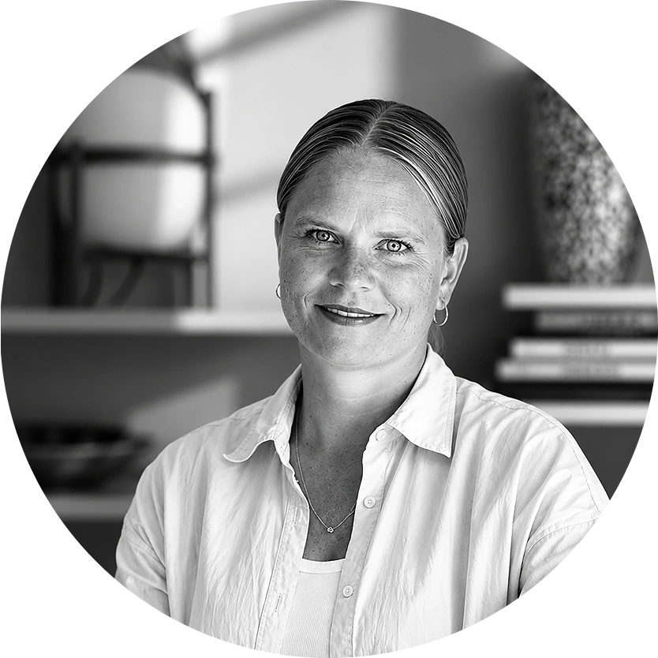
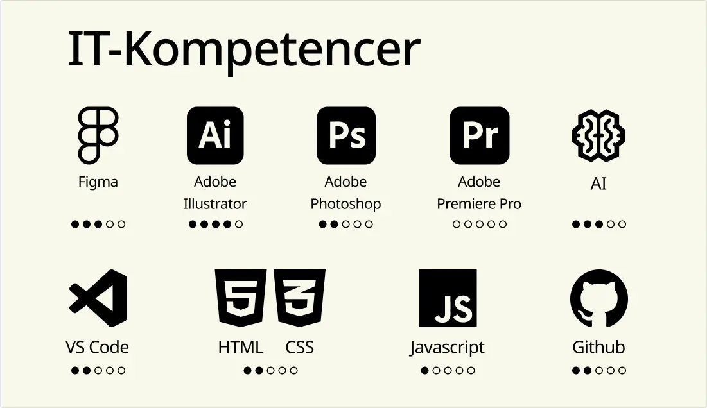

Om mig
Baggrund
Jeg hedder Anne Rosenvold Tygesen, og jeg studerer Multimediedesign. Jeg brænder for at skabe æstetik, visuelt design, brugeroplevelser og digital formidling. Jeg motiveres af at omsætte idéer til funktionelle og æstetiske løsninger, hvor kreativitet og struktur går hånd i hånd.

Kompetencer
- UX og brugercentreret design
- Research og brugertests
- Wireframes og prototyper
- Moodboards og visuelle identiteter
- UI-design
- Indholdsproduktion og storytelling
- HTML, CSS og grundlæggende JavaScript
- Projektplanlægning og dokumentation
Faglig erfaring
Jeg kommer med mere end 20 års erfaring fra den kreative branche, hvor jeg har arbejdet som tøjdesigner med fokus på konceptudvikling, designprocesser, trends, farver, materialer og visuel formidling. Derudover har jeg gennem mit studie har jeg arbejdet med hele designprocessen – fra research og idéudvikling til prototyper, brugertests og kodning af websites. Jeg har erfaring med både individuelle projekter og tværfagligt gruppearbejde, hvor samarbejde og kommunikation har været centrale elementer.
